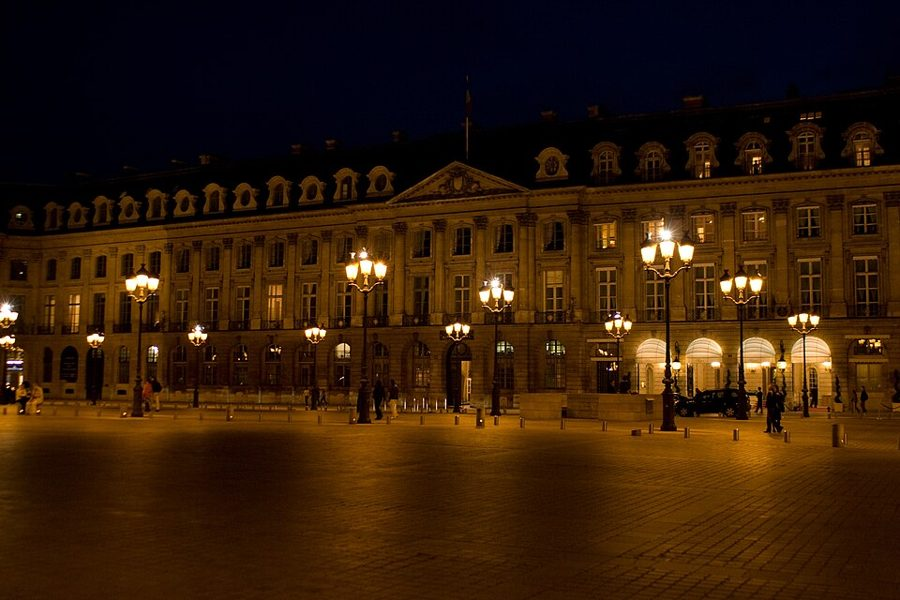
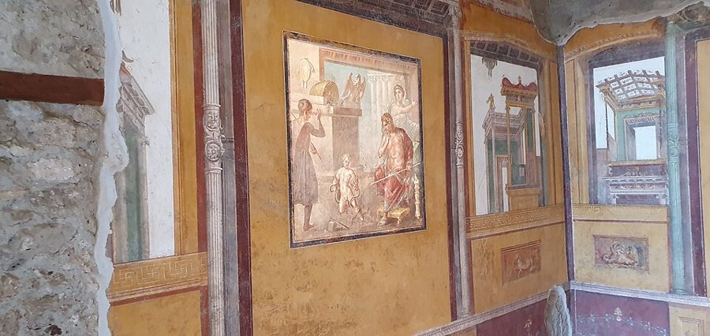
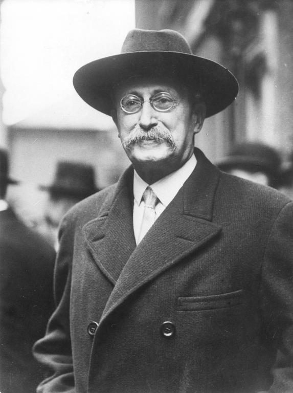
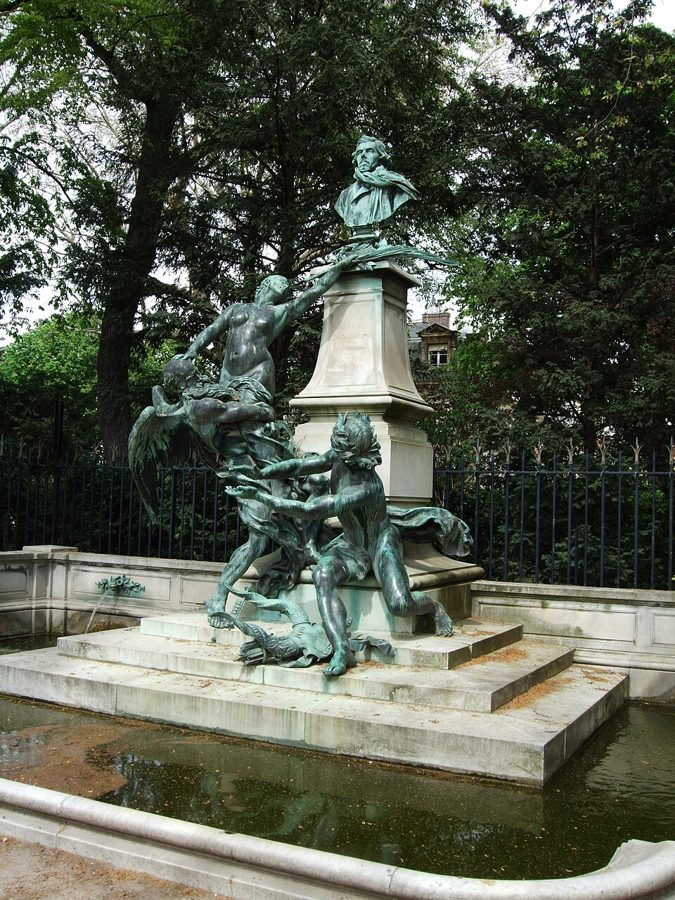
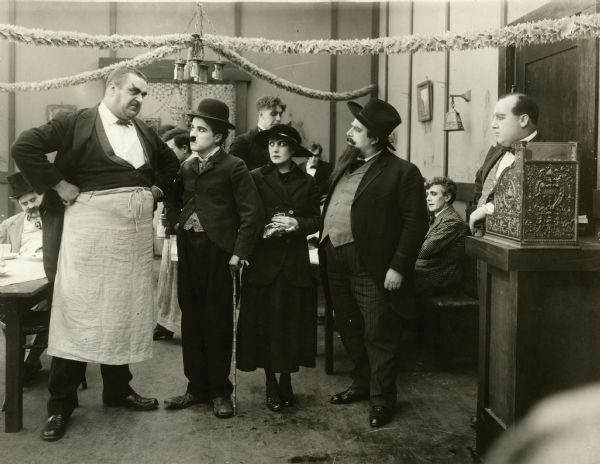

这一篇在做什么
在巴黎住了将近四年的那个八月，Martha 怀着第二个孩子，作者咬牙办了丽兹酒店泳池的短期会员。女儿出生后，他每周三带五岁的 Luke 去游泳，Luke 在池子里遇见了他喜欢的女孩 Cressida，作者就一轮又一轮地付热巧克力的账。全篇两条线：池子里一个五岁孩子的初恋，家里一对结婚多年的夫妻。读的时候抓住作者怎样拿孩子的事照自己的婚姻，再留意反复出现的「不准」。

旺多姆广场的夜景，2008 年。原图说明写着画面里是司法部和丽兹酒店。这一篇的场景几乎都在丽兹的泳池里。Frédéric de Villamil，CC BY-SA 2.0，维基共享资源 读之前：这篇的来历
文中没写年份，但推得出来：作者说已经在第六区的公共泳池游了四年，Luke 五岁，女儿 Olivia 就在泳池会员期间出生（前一篇第 21 篇写的就是怀她）。所以这是 1999 年夏末到秋天，一家人在巴黎的最后一年。它在第四部分，是全书倒数第二篇，后一篇第 23 篇写千禧年夜。丽兹在第 5 篇出现过：刚到巴黎时他们去试游，看见池边的人挂在池沿上吃银盘里的三明治，被吓退了。Cressida 在第 14 篇（第三篇圣诞日记）里也出现过，Luke 举她当「美」的例子。这一篇几乎不碰法国政治，是全书最私人的几篇之一。
一个五岁孩子在丽兹泳池里的初恋，为什么让作者想到自己的婚姻？巴黎的「浪漫」，来自它给你的东西，还是它不给你的东西？
读的时候带着这几个问题。不用先找答案，读完回来对照「检查一下理解」。
作者在丽兹为什么总是不自在？他给自己下了什么评语？§1
作者从 Luke 和 Cressida 身上，看到了自己和 Martha 的什么？§1
Luke 那个周三为什么不想去游泳？作者觉得这件事好笑，还是有点吓人？§2
这一篇的路线
这一篇不是来回剪接，是一条线慢慢往下沉。§1 前大半是泳池里的喜剧：装修、富太太、热巧克力；读到普鲁斯特那句「你在我这边」，镜头忽然转到作者和 Martha 的婚姻，接着是走廊、餐巾纸、账单。读译本时容易觉得「怎么扯到吵架了」，其实这是全篇的转弯处。§2 回到泳池，用 Luke 不肯去的那个周三把两条线拧在一起。§3 很短，只是收尾。
泳池
婚姻
§1
§2
§3
美人鱼马赛克
水里的她
三轮热巧克力
二十年前私奔
公园门口告示
走廊和餐巾纸
账单
浮力和光身子
蒸汽浴告示
周三不去
香槟和老歌
摸美人鱼
一抽屉浴帽
本站示意图。橙点是丽兹泳池这条线，蓝点是作者和 Martha 的婚姻这条线，折线是阅读顺序，虚线是原书的分隔。§1 只在后半段沉到下面一条线，§2 只沉下去一次。 作者落在哪： 作者猜想，巴黎之所以「浪漫」，靠的是它的「不」：规矩和禁令拦住欲望，欲望反而更强。孩子的初恋让他看见，自己和 Martha 来巴黎后天天挨在一起，少了阻碍。Luke 不去的那个周三之后，那一夜是否唤醒了妻子的欲望，他说「我不知道」，只说爱的几样东西又回来了一会儿。
分节地图
原书这一篇有两处分隔，分成三节。每一节的粗体是读译本时认得出的场面；下面的斜体是英文这一节开头的几个词，打开电子书搜它就能跳到那里。全篇六千多词，分两次坐下；§1 一节就有约 4800 词，中途想歇，看下面第一行的建议。读完一节打个勾。
第一次坐下§1 · 约 4800 词 · 泳池里的喜剧，后来转进婚姻；想歇就停在第一次遇见 Cressida、回家讲给 Martha 听之后
丽兹泳池：庞贝壁画、美人鱼、富太太约 4800 词 When Martha was still pregnant, we … 前大半是泳池喜剧，从普鲁斯特一句话转到夫妻；留意「不准」第一次出现。 第二次坐下§2–§3 · 约 1800 词 · Luke 不肯去的那个周三，和最后一次下水
Luke 缺席的周三，蒸汽浴门口的告示约 1500 词 Three weeks, and then four went … 孩子的初恋出现转折，作者拿它照自己和 Martha。 会员到期，终于摸到美人鱼约 300 词 Our abonnement was running out that … 孩子怎样对待失去；最后一句的浴帽别跳过。
背景：作者默认你知道的事
按在书里出现的顺序排，标题前是节号。
§1 丽兹酒店和旺多姆广场丽兹（Ritz）在巴黎右岸的旺多姆广场（Place Vendôme），1898 年开业，是巴黎最有名的豪华酒店之一，1979 年起归埃及商人 Mohamed Al-Fayed 所有。它也和海明威的名字连在一起：1944 年巴黎解放时他去了丽兹的酒吧，那间酒吧如今就叫 Bar Hemingway。作者家在左岸，平时游泳去第六区的公共泳池；丽兹在河对岸，是另一个世界。§2 说门口戴墨镜的保安让他觉得 Al-Fayed 的眼睛在盯着自己。
§1 「庞贝风」和错视画十八世纪中叶庞贝古城开始发掘，此后欧洲一再流行仿古罗马的装饰：画出来的柱子、神庙门面、穿托加袍的人。错视画（trompe l’oeil，法文「骗眼睛」）是把平面画得像立体，比如把天花板画成一群从上往下看的人。作者说丽兹泳池的壁画介于维多利亚时代的学院派和纽约披萨店之间，又说这种「庞贝风」简直在替维苏威火山说话：公元 79 年正是那座火山埋了庞贝。挖苦得很重，是玩笑。

庞贝维蒂之家（House of the Vettii）的壁画，2023 年。墙上的柱子和远处的楼阁都是画出来的。这是真正的庞贝壁画，与丽兹无关；书里说泳池的装修仿的是这种风格。Yair Haklai，CC BY-SA 4.0，维基共享资源 §1 布鲁姆和八月的长假莱昂·布鲁姆（Léon Blum）是社会党领袖，1936 年人民阵线（Front populaire）赢得大选后出任总理，那年通过的法律让法国雇员第一次有了带薪年假。书里说五周的法定假期是人民阵线的遗产、是布鲁姆推动的法律之一。严格说，1936 年给的是两周，1956 年加到三周，1969 年四周，第五周是 1982 年才加上的。说是那时开的头不错，五周却不是布鲁姆定的。作者拿这件事给自己开脱：丽兹的会员就算「我们的五周」。

布鲁姆，1936 年。Keystone France（作者不详），公有领域，维基共享资源 §1 卢森堡公园里的作家像卢森堡公园（Jardin du Luxembourg）在左岸第六区，园里立着许多作家、艺术家的像。作者跑步拿它们当路标：圣伯夫（Sainte-Beuve），十九世纪的文学批评家，普鲁斯特生前写过一部驳他的书稿；波德莱尔（Baudelaire），诗人，有一首散文诗就叫「醉吧」（Enivrez-vous），所以作者说他的冷脸像在劝人「不如去喝醉」；画家德拉克洛瓦（Delacroix）的纪念碑上，几个人像仰望着他的半身像。

卢森堡公园里的德拉克洛瓦纪念碑，Jules Dalou 作，1890 年落成；照片摄于 2013 年。书里说的「天使仰望他」就是底下这几个人像，作者跑两圈就要经过它两次。Jim Linwood，CC BY 2.0，维基共享资源 §1 丽兹的「坏运气」作者说丽兹「业障重」，举了他们住巴黎期间的三件事。美国驻法大使哈里曼 1997 年 2 月在丽兹的泳池游泳时脑溢血，2 月 5 日去世。同年 8 月 31 日凌晨，戴安娜王妃和 Dodi Fayed 从丽兹出发，车在阿尔马桥下的隧道里出事，两人都死了。那位丢了名声的英国议员书里没点名，作者也说只是「隐约听说」，本站没法确定指的是谁。九十年代和丽兹账单扯上关系的保守党议员至少有两位：Jonathan Aitken 1993 年住丽兹的账单是沙特方面的人付的，他坚称是妻子付的，1999 年因伪证被判 18 个月；Neil Hamilton 1987 年在丽兹当过 Al-Fayed 的客人，后来卷进「收钱提问」丑闻，1997 年丢了议席。
哈里曼 Pamela Harriman 英国出生的社交名流，后来入籍美国，1993 年起任美国驻法大使。§1 引了她的一句 I go badly，接一个 went，见「词与短语」。
Dodi Fayed Dodi Fayed 丽兹老板 Mohamed Al-Fayed 的儿子，和戴安娜同车遇难。§1 末尾作者签账单时想装出「Dodi 最后一程之前」的派头，是黑色的自嘲。
§1 普鲁斯特：吉尔贝特和马塞尔普鲁斯特（Marcel Proust）《追忆似水年华》的第一卷《去斯万家那边》（1913）最后一部分叫「地名：名称」。叙述者马塞尔小时候在香榭丽舍的花园里认识了斯万的女儿吉尔贝特（Gilberte），两人常在一起玩，他爱上了她。作者两次拿 Luke 和 Cressida 比这对孩子，还凭记忆引了吉尔贝特的一句「你在我这边」，又承认自己总弄不清那两个孩子是八岁还是十八岁。§2 那句「普鲁斯特没夸张，五岁就是十五岁」也是接着这里说的。
§1 卓别林《移民》和一串电影典故《移民》（The Immigrant，1917）是卓别林的短片：流浪汉刚到美国，在饭馆里请一个女孩（Edna Purviance 演）吃豆子，伸手一摸，路上捡来的那枚硬币不见了，账付不出。作者陪孩子们点第二轮热巧克力时就是这个心情。这一节的电影典故很密：Ada 的嗓音像 Glynis Johns 和 Demi Moore，两位都以沙哑的嗓子出名；Ada 看他的眼神像 Lorelei Lee 看金主；她的巧克力胡子让她像火枪手阿拉密斯。

《移民》的剧照：系围裙的侍者（Eric Campbell）瞪着卓别林，右边是 Edna Purviance 和演画家的 Henry Bergman。饭馆这场戏就是作者想到的那一幕。Wisconsin Center for Film and Theater Research，公有领域，维基共享资源
Lorelei Lee Lorelei Lee Anita Loos 1925 年的小说《绅士爱美人》（Gentlemen Prefer Blondes）的女主角，一路靠有钱的男人买单，小说里也去了巴黎；1953 年拍成电影，玛丽莲·梦露演她。
阿拉密斯 Aramis 大仲马《三个火枪手》里的一位火枪手。书里说他是火枪手中最年轻、最傲气的一个，拿来比一个嘴边沾着巧克力的五岁女孩。
§2 赫本和《甜姐儿》Cressida 叫 Luke「Luca」，重音放在第一个音节，作者说就像奥黛丽·赫本（Audrey Hepburn）在《甜姐儿》（Funny Face，1957）里说「Take the picture」。那部片子的故事大半发生在巴黎，赫本演一个被时装摄影师（Fred Astaire 演）带到巴黎的书店店员。§1 作者已经说过 Cressida 有「赫本的嗓音」：从小说法语、英语两种话长大的孩子那种又雅又尖的声音。
§2 勒格朗的那首老歌「You Must Believe in Spring」是法国作曲家米歇尔·勒格朗（Michel Legrand）的曲子，原是他为 1967 年的歌舞片《柳媚花娇》（Les Demoiselles de Rochefort）写的歌，后来配上英文词，Tony Bennett 等许多歌手唱过。第 1 篇说两人当年动念来巴黎时，一遍遍看《瑟堡的雨伞》，那部片子的音乐也是勒格朗写的。作者说这是把他们带到圣日耳曼大道来的歌之一。
词与短语
只收中文译文多半传不出原味的地方：熟词生义、反话和挖苦、典故、夹在英文里的法文。读译本读到觉得别扭、不知道作者在说什么时，来这里找那一节的；斜体小字是原句里的几个英文词，在电子书里搜它就能找到原文。
§1 丽兹泳池：庞贝壁画、美人鱼、富太太
functionary lifeguards
… in this case officious, functionary lifeguards.
官僚做派的救生员
functionary 本是名词「公务员、小官吏」，这里当形容词用：救生员也像窗口后面的办事员，管东管西。前半句说法国的公共机构都养着太多公务员，作者把公共泳池也算了进去。
climatisé
… claim to be climatisé are not …
（法文）有空调的
字面是「调过气候的」。作者说巴黎标着这个词的地方，凉气也只在墙脚下淌一点，和纽约的空调不是一回事。
Anglomania
… sign of old-fashioned Parisian Anglomania …
崇英风气
巴黎上流社会很早就爱用英文名字，赛马俱乐部也直接叫 Jockey Club。作者猜，泳池叫 Health Club 与其说是迁就美国客人，不如说是这种老派的崇英。
makes a strong case for Mount Vesuvius
… makes a strong case for Mount Vesuvius …
让人觉得维苏威火山喷得有理
make a strong case for 是「有力地支持某事」。庞贝是被维苏威火山埋掉的；装修仿庞贝仿成这样，简直证明火山该喷。反话，见「背景」。
waiting to check out of the hotel
… as though waiting to check out …
像在排队退房
浮雕上一排古典人物并肩站着，作者说他们像在前台排队结账。把庄重的古典装饰拉进酒店的日常，是他惯用的招数。
New York Pizzeria
… between Victorian-Academic and New York Pizzeria.
纽约披萨店的画风
纽约的意大利馆子爱在墙上画古罗马、那不勒斯的风景，热闹而俗。一头是维多利亚时代的学院派，一头是披萨店，作者说丽兹的壁画风格在两者之间：一半学院派的正经，一半披萨店的俗气。
measured in ruin
… kitsch is largely measured in ruin.
差的多半是成没成废墟
kitsch 是俗艳的仿制品。作者说这对美人鱼马赛克若是罗马工匠做的、被考古挖出来，就是宝贝：艺术和俗物的分界，很大程度看它有没有成为废墟。半开玩笑，也有几分真。
like nervous poodles
They swam like nervous poodles …
像紧张的贵宾犬那样游
富太太们游泳时脖子伸得老高，护着头发。这个画面后面还要用：Luke 下水追 Cressida 时也是抬着头游。
the old Hemingway-Flanner Paris
… altar of the old Hemingway-Flanner Paris
海明威和弗兰纳的老巴黎
Janet Flanner 从 1925 年起给《纽约客》写巴黎通讯，写了半个世纪；海明威和丽兹的渊源见「背景」。办会员是给美国人心中这个老巴黎上的一炷香，而作者自己正是《纽约客》派驻巴黎的人。
it was our five weeks
… it was our five weeks.
这就算我们的五周假
指法国人的五周带薪假（见「背景」）。花大钱泡丽兹，硬说成是在享受社会党争来的权利，还说布鲁姆「不会太生气」。自嘲。
do a Baudelaire
… I could do a Baudelaire and then …
跑到波德莱尔像那儿
拿雕像当里程标：「一个波德莱尔」是三分之二圈，「两个德拉克洛瓦」是两整圈。人名当计量单位用，读中文容易看不出是在说距离。
Get drunk instead
Get drunk instead, Baudelaire seemed to counsel …
不如去喝醉
多半是在影射波德莱尔的散文诗「醉吧」（见「背景」）。美国人今天跑步是为了明天能多跑，诗人从底座上瞪着他们，作者说那张冷脸在「明智地」劝人去喝酒。
the non-Paris Paris
… the capital of the non-Paris Paris.
「不是巴黎的巴黎」的首都
指巴黎城里属于国际富豪、和本地日常生活不相干的那一块。丽兹在巴黎，却不是作者爱的那个巴黎。
and went
… she had said, and went …
说完就走了
先引哈里曼的 I go badly（我不行了），再接一个 went：go 在这里是「去世」的委婉说法。用同一个动词收住，轻描淡写，冷得吓人。
overclass
… new, late-century overclass big money …
新起的顶层富人
照 underclass（底层）反造的词。作者把老派的巴黎上流社会和世纪末的新钱分开说：丽兹如今属于后者，连同新钱那种紧绷、处处装监控的不安。
commis
… having a little commis in uniform …
（法文）小伙计
饭店、酒店里最低一级的帮工；第 12 篇写餐厅后厨，用的也是这个词。作者喜欢有人替他转旋转门，又总担心自己那时的样子。
hedonistic but not at all heedless
… hedonistic but not at all heedless …
爱享乐，却一点也放不开
两个 he- 开头的词押头韵。heedless 是「不管不顾」：作者想享受，又时时盯着计价器。§1 后面又说了一遍，成了他给自己的定评。
quite a dish
… she was quite a dish, the most …
真是个美人儿
dish 不是盘子，是老派俚语「漂亮姑娘」。第 14 篇 Luke 第一次这样说 Cressida，作者不知道他从哪学来的；这里查到了，是兔八哥卡通里的话。
she was also a peach
… she was also a peach.
还是个大好人
peach 口语里指特别好、讨人喜欢的人。dish 说长相，peach 说心地：学校午睡时 Luke 慌了，是 Cressida 牵着他的手。两个词第 14 篇都出现过，都是老派的说法。
play date
… used the expression play date in Paris.
约好的玩伴聚会
美国中产父母替孩子约时间一起玩的说法。作者说巴黎没这个词：孩子来了就玩，玩完家长接走，没那么多安排。
peignoir
… of his white terry-cloth peignoir …
（法文）浴袍
英文里 peignoir 多指女式睡袍，这里照法文的意思用，是丽兹发的毛巾浴袍。Luke 把偷来的浴帽塞在它的口袋里。
like a puppy, like a millionaire’s wife
… like a puppy, like a millionaire’s wife …
像小狗，也像富翁的太太
两个比方说的都是「抬着头游」：小狗刨水，富太太护发型（接第 4 段的贵宾犬）。一个五岁孩子同时像这两样，好笑。
central casting best friend
… perfect, central casting best friend …
像片场派来的标准闺蜜
Central Casting 是好莱坞给剧组派群众演员的老牌公司，central casting 引申为「完全照套路的角色」。作者说 Ada 像是照电影里「美人身边的女伴」选来的。
bravura dashes
… sudden bravura dashes out to the …
炫技似的冲刺
bravura 原指音乐里的炫技段落。作者说 Luke 的游法就像自己住了五年后说法语：大多时候扒着池边，偶尔冲一下深水区，给女孩或听众看。
damp beau monde
… this damp beau monde, albeit one …
（法文）湿漉漉的上流社会
beau monde 是上流社交圈。加一个 damp，就成了泳池里的「上流社会」，Luke 成了其中一员，只是肺里时不时进点水。
chocolat chaud
… I want a chocolat chaud …
（法文）热巧克力
Ada 用法文点单，口气像吩咐下人。这个词全篇反复出现，到 §2 末尾，作者把香槟叫作他和 Martha 自己的 chocolat chaud。
out of my depth
… out of my depth and swallowing water.
力不从心（也是：脚够不着底）
out of one’s depth 字面是「水深过了头」，引申为「超出能力」。作者付账的心虚和 Luke 在深水区呛水是同一个画面，中文很难同时留住两层。
the nonchalance of Hem
… feign the nonchalance of Hem ordering …
学海明威那样满不在乎
Hem 是海明威的昵称。签账单时，作者想装出海明威在丽兹开香槟的派头，又想到 Dodi Fayed 的「最后一程」（见「背景」）。自嘲里带着黑色玩笑。
of all people / of all places
… You of all people! Here …
偏偏是你！偏偏在这儿！
of all … 是「这么多人（地方）里偏偏是」，带着惊喜。作者说自己总以为会被一个人剩下，所以在街上看见妻儿走来就喜出望外；小女儿吃奶时回头冲他笑，也像在说这句。
You are on my side
… You are on my side. …
你是我这边的
作者凭记忆引普鲁斯特里吉尔贝特对马塞尔说的话（见「背景」）。on someone’s side 是「和某人一伙」。孩子嘴里像玩游戏分边，作者听出的是恋爱；下一段他把这句用到自己和 Martha 身上。
the number 6 uptown
… and the number 6 uptown for life …
一辈子坐 6 号线去上城
纽约地铁 6 号线沿曼哈顿东边南北走，uptown 是往北。作者列纽约生活的烦心事：饭局、画廊开幕、缅甸外卖，和一辈子挤同一条地铁线。
your self always catches up
… and your self always catches up.
你总会被自己追上
故意把 yourself 拆成 your self。第 1 篇里朋友们说你逃不开三样东西，第三样是你自己；作者夫妇当时低声回了一句「但逃还是能逃的」。这里他承认了一半。
dam the libido
… boundaries dam the libido, as Freud …
像水坝一样拦住欲望
dam 当动词，「筑坝拦住」，和后面的 overflow backward（倒灌）连成一个水的比方，又和泳池接上。libido 是弗洛伊德说的欲力。
a reality principle
… into a reality principle for a …
「现实原则」本人
弗洛伊德的术语，和「快乐原则」相对。作者说 Martha 原是他的梦中人，到巴黎成了替一个乱糟糟的丈夫和两个孩子管现实的人。拿术语说妻子，又亲又酸。
Kinko-style copy shops
… discouragement of Kinko-style copy shops …
美式连锁复印店
Kinko’s 是美国的连锁复印店，交稿进去就能复印装订。作者说巴黎限制录像带出租店是为了保护小影院，限制复印店保护的是谁，他猜是剩下的抄写员。玩笑。
She has a habit
… She has a habit.
她上瘾了
have a habit 单说时指毒瘾。作者把一个每回都要连点几杯热巧克力的小女孩说成「有瘾」，用来搪塞妻子的追问。
§2 Luke 缺席的周三，蒸汽浴门口的告示
vestiaire
… in the vestiaire, would always have …
（法文）更衣室
父子俩在更衣室里总要聊两件事：人为什么浮得起来，为什么这里能光着身子、池边就不行。§2 末尾这两件事会回来。
The metaphysics of modesty
The metaphysics of modesty was even harder …
害羞的形而上学
和后面的 the physics of floating（浮力的物理）对仗：physics 对 metaphysics。给五岁孩子讲为什么要穿衣服，比讲浮力还难，作者用大词说小事。
sublime
… that were scary but irresistible …
崇高（又可怕又迷人）
不是口语里的「绝妙」。美学里的「崇高」和「美」相对，指高山、风暴那种叫人害怕又挪不开眼的东西。第 14 篇作者教过 Luke 这两个词，Luke 举的「美」的例子正是 Cressida；这里「崇高」归了 Ada。
a child masher
… the Ritz, a child masher, buying …
纠缠小女孩的怪人
masher 是二十世纪初的说法，指在街上纠缠、搭讪女人的男人，现在不这么说了。作者一个人去泳池，怕请小女孩喝热巧克力被当成这种人，赶紧溜了。
hammam
… I went down to the hammam …
（法文）蒸汽浴室
原是阿拉伯语，指公共蒸汽浴，法文借来用，作者顺手解释了。浴室门口那张告示是这一段的重点。
elegant variations on the theme of No
… elegant variations on the theme of No!
「不准」主题的优雅变奏
variations on a theme 是音乐里的「主题变奏」。告示用四种不同的说法表示「不行」，作者把它们听成同一个主题的四段变奏，口气又佩服又好笑。
made quite a score with
… made quite a score with Cressida
把 Cressida 迷住了
score 在俚语里有「追女孩得手」的意思，make quite a score with 在这里是「很得某人欢心」。父亲用男人之间的口气跟五岁的儿子说话，本身就好笑。
broken up
She was just broken up because …
难过得不得了
be broken up 是「非常难过」，和「分手」（break up）无关。中文读者最容易看错。
reciting pornography
… as if I were reciting pornography.
像在念色情读物
儿子一遍遍要他复述 Cressida 想念他的话，作者觉得自己像在念黄色读物。夸张，却点出了这件事的性质：孩子在享受被人想念。
our own chocolat chaud
… our own chocolat chaud, that night …
我们自己的热巧克力
指那瓶香槟。孩子们的热巧克力，大人的香槟：两条线在这里接上。
first thrill of sadism
… her son’s first thrill of sadism with …
头一回尝到让人难受的快感
sadism 这里不是性虐待，是「让对方受苦而得的快感」：Luke 故意不去，享受 Cressida 想他。作者用这么重的词，一半是玩笑。
buoyancy, seminudity, and uncertainty
… of love: buoyancy, seminudity, and uncertainty …
浮力、半裸、不确定
前两样正是父子在更衣室里聊的那两件事，作者把它们连同「不确定」一本正经地列为爱情的要素。
§3 会员到期，终于摸到美人鱼
abonnement
Our abonnement was running out …
（法文）会员资格
字面是「订阅、包期」，订报、办会员都用它。第 5 篇作者去健身房办会员时也用过这个词的动词 abonner。
cadge invitations
… have to cadge invitations to swim …
蹭人家的邀请
cadge 是「讨、蹭」。会员到期，再去就得靠两个女孩邀请，不能再平起平坐。
rubes
… that we were rubes, just visiting …
土包子
rube 是美国俚语，指进城的乡下人。作者不忍心告诉儿子，他们在丽兹只是过客。
lighter than your circumstances
… a little lighter than your circumstances …
比自己的处境轻一点
接着 §2「人为什么浮得起来」那段：孩子比自己的境遇轻，所以总能浮着。lighter 同时是「更轻」和「更轻松」。
the economy of pleasure
… the economy of pleasure at least …
快乐的总账
前半句的 budget（预算）是一笔一笔地算，后半句的 economy（经济）是整体。孩子怕许诺好的乐子少了哪一样，却从不担心乐子会用完：总账永远有盈余。
后来
这一篇写的是 1999 年的丽兹。下面接着讲它后来怎样。每条都写了核对日期，这类内容过一两年就会变。
丽兹关门整修，泳池还在
2016 年，丽兹在整修约四年后重新开业。新的健身部分叫 Ritz Club，占两层，里面仍有一个带柱廊的室内泳池，长度够游来回；旁边开了 Chanel 品牌的第一家独立水疗。泳池底那对美人鱼马赛克还在不在，本站没有查到可靠的说法。核对于 2026-10。依据：AFAR 的丽兹酒店介绍，Leisure Opportunities 2016 年的报道。
值得停下来的句子
It is not the yeses but the noes of Paris … that makes it powerful.— §1，后半部分作者讲巴黎为什么「浪漫」的那一段。本站译：让巴黎有力量的，不是它的「可以」，是它的「不行」。
It is not A but B that … 是强调句。yeses 和 noes 把两个最小的词变成复数名词，像在数巴黎一天说多少次「行」、多少次「不」；中间省掉的一截换个说法再对一次（它许给爱情的，它拦着爱情的）。中文「可以 / 不行」意思到了，丢的是把副词当名词来数的俏皮。还要注意这一段开头是 Perhaps：作者是在猜，不是下定论。
Martha and I had always been so close; but now we were so near, and that is different.— §1，作者从孩子的初恋转到自己婚姻的那一段的最后一句。本站译：我和 Martha 一向很亲；可现在我们是挨得太近了，这不一样。
close 和 near 在中文里都是「近」。close 是关系近、心近；near 是空间上挨着，原文还把 near 排成斜体。英文换一个字就把好事说成了难处，中文得换两个不同的词才分得开，原句那种「几乎同义、偏偏不同」的味道就淡了。前面几行刚说过，搬来巴黎让他们天天在同一个池子里喝同样的热巧克力。
检查一下理解
先在心里答，再点开。答错的那题，回书里把对应那一节再读一遍。
1.（§1）作者在丽兹为什么总不自在？ 他说不是因为不喜欢昂贵的享受，恰恰因为喜欢，却总觉得自己不会享受：爱享乐又放不开，连别人替他转门都担心自己的样子。丽兹在他眼里也不是老巴黎，是世纪末新富豪的地方。
2.（§1）作者说 Luke 游泳的样子像什么？这个比方在笑谁？ 像他自己住了五年后说法语：大多时候扒着池边，偶尔猛冲到深水区给女孩或听众看。说的是 Luke，笑的是作者自己。
3.（§1）Luke 为什么一点也不觉得在丽兹碰见 Cressida 稀奇？ 孩子不知道世界有多大，他常去的地方就是大家都去的地方；作者说只有孩子和贵族有这种感觉。他自己正相反，总以为会被一个人剩下。
4.（§1）Luke 的初恋为什么让作者想到自己的婚姻？ 孩子的恋爱处处是阻碍：呛水、保姆叫上岸、旁边跟着个闹脾气的朋友。作者说浪漫总和困难连在一起。他和 Martha 来巴黎本想留住当初的感情，结果天天挨在一起，少了阻碍，只剩各自的小恼火：长走廊、餐巾纸。
5.（§1 §2）公园门口和蒸汽浴门口的告示，在全篇里起什么作用？ 都是「不准」的例子。作者猜想巴黎的浪漫正来自这些禁令：不能做，才想做；能做，反而不想。蒸汽浴的告示还让他看到，连富人的更衣室也躲不开法国人的规矩。
6.（§2）Luke 那个周三为什么不想去？作者怎么看？ 他想知道 Cressida 见不到他会说什么，要父亲一字一句地复述。作者说他碰上了最老的爱情问题：和对方在一起快乐，还是让对方因为自己不在而难受更快乐。普鲁斯特没夸张，五岁就是十五岁。最后 Luke 还是去了。
用一句话说这一篇，写给一个没读过的人。
精彩回顾
读过又忘了，从这里想起来。挑的是这一篇最值得记住的场面和说法，不按原书顺序；每条后面是节号，想细看就回书里那一节。全书各篇的这一节都收在全书回顾 。
一句话： 一个五岁孩子在丽兹泳池里的初恋，让作者看见巴黎的浪漫靠的是阻碍，也看见自己和妻子挨得太近的婚姻。
告诉我她会怎么说 Luke 不肯去泳池，要父亲一字一句地复述 Cressida 见不到他会说的话，脸上发光。作者说，五岁就是十五岁。
§2 火山的理由 丽兹泳池仿庞贝装修，柱子、浮雕、穿托加袍的罗马人一应俱全。作者说它俗得简直在替维苏威火山说话：那座火山埋了庞贝。
§1 第二轮热巧克力 Ada 一挥手又点一轮，作者要她说「请」，换来一个「你连当我爸都付不起」的眼神。他觉得自己像《移民》里的卓别林，摸口袋发现硬币不见了。
§1 太近了 作者说他和 Martha 一向很亲（close），到巴黎却挨得太近（near）。气的不再是外人，是公寓的长走廊，和外卖店只给一张餐巾纸。
§1 一抽屉浴帽 离开巴黎收拾东西时，作者在 Luke 抽屉的最底层翻出几百个丽兹的浴帽，盒子都没拆。
§3